Mon Parcours
Baccalauréat Scientifique D
JEAN BAPTISTE TATY LOUTARD CONGO 2022 – 2023Formation scientifique générale avec spécialisation en mathématiques et sciences physiques.
Formation Infographie
BIG JUDGE COMMUNICATION CONGO Février – Juin 2024Formation en conception graphique, design et outils créatifs (Photoshop, Illustrator).
BTS SIO – Option SLAM
SCHOLIA FRANCE 2024 – 2026Spécialisation en développement web et mobile.
Formation
🎓 BTS SIO
Le BTS Services Informatiques aux Organisations est une formation Bac+2 orientée vers les métiers de l’informatique. Elle prépare à une insertion professionnelle rapide ou à une poursuite d’études dans le numérique.
🖧 Option SISR
L’option SISR forme des spécialistes des infrastructures informatiques. Elle est axée sur l’administration des systèmes, la gestion des réseaux, la sécurité et la maintenance.
- Administration systèmes et réseaux
- Sécurité informatique
- Support et maintenance
💻 Option SLAM
L’option SLAM est orientée vers le développement d’applications et de solutions logicielles métiers. Elle couvre l’analyse des besoins, la programmation et la gestion des bases de données.
- Développement web et applicatif
- Analyse et conception logicielle
- Maintenance des applications
Réalisations
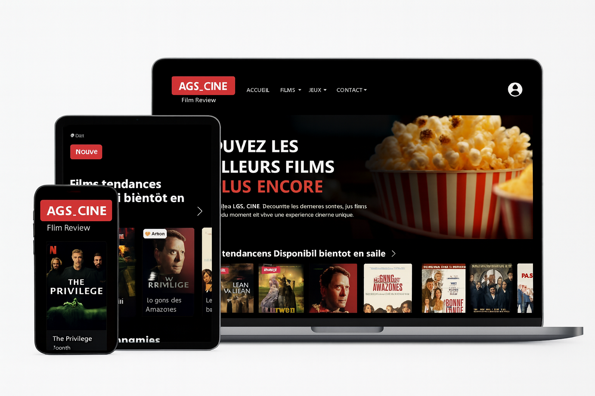
Site de Cinéma AGS_CINE
Technologies : PHP, MySQL, HTML, CSS, Boostrap, JavaScript
Développement d’une plateforme permettant de gérer les films, les salles, les séances et l’affichage dynamique du cinéma AGS_CINE.
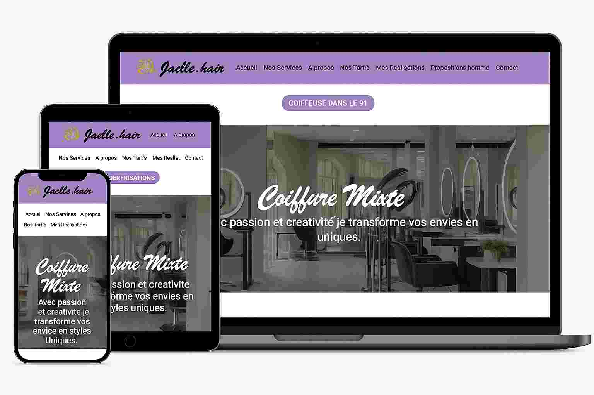
Site Jaëlle Hair
Technologies : HTML, CSS, JavaScript, PHP
Création du site vitrine professionnel pour mon salon Jaëlle Hair. Prestations, tarifs, galerie, contact. Projet complet réalisé de A à Z.
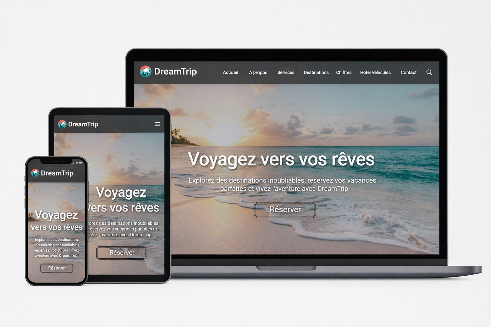
Plateforme de Voyage – DreamTrip
Technologies : HTML, CSS, JavaScript, PHP
Conception et développement d’un site web de voyage moderne permettant aux utilisateurs de découvrir des destinations, consulter des offres touristiques et effectuer des réservations en ligne. Le site propose une interface immersive, responsive et orientée expérience utilisateur.
.jpg)
Site Vitrine Business-Privé
Technologies : HTML, CSS, JavaScript, PHP, MySQL
Développement complet d’un site vitrine responsive pour une entreprise privée.
Compétences
Langages de programmation
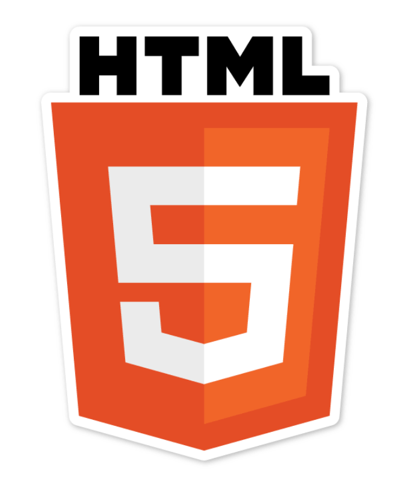
HTML
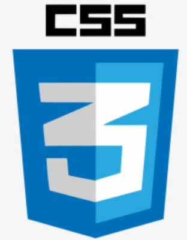
CSS
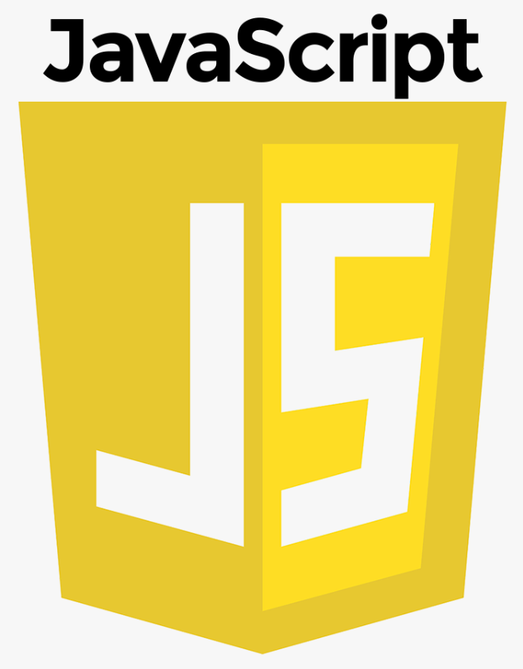
JavaScript
PHP
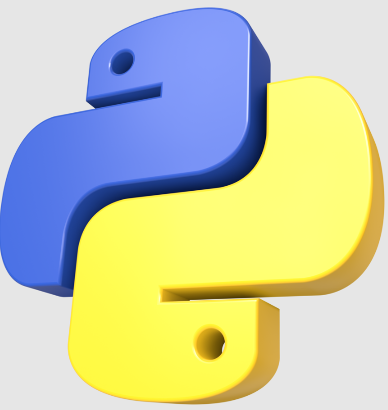
Python
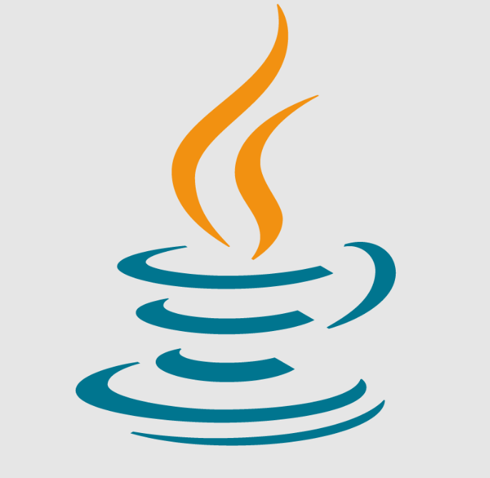
Java
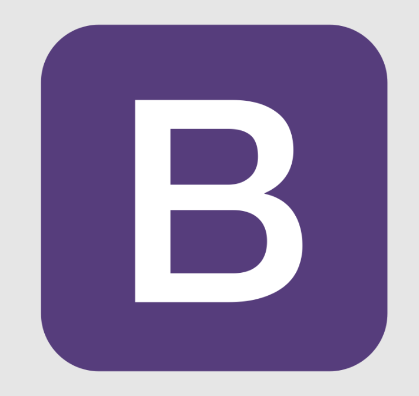
Bootstrap
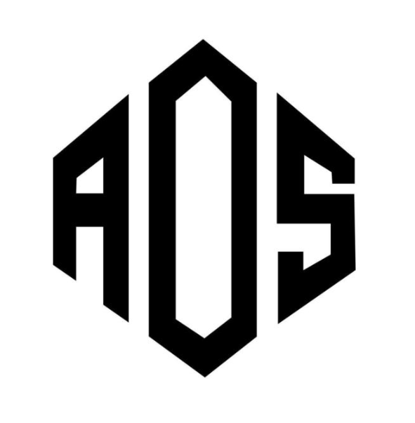
AOS JS
Gestion de bases de données
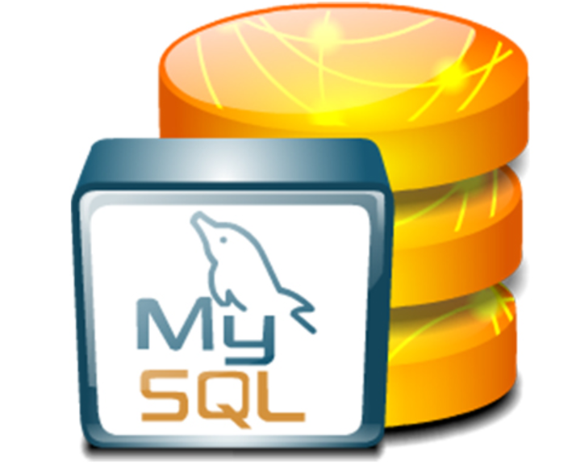
MySQL / SQL
Compétences professionnelles
Soft skills
Logiciels utilisés
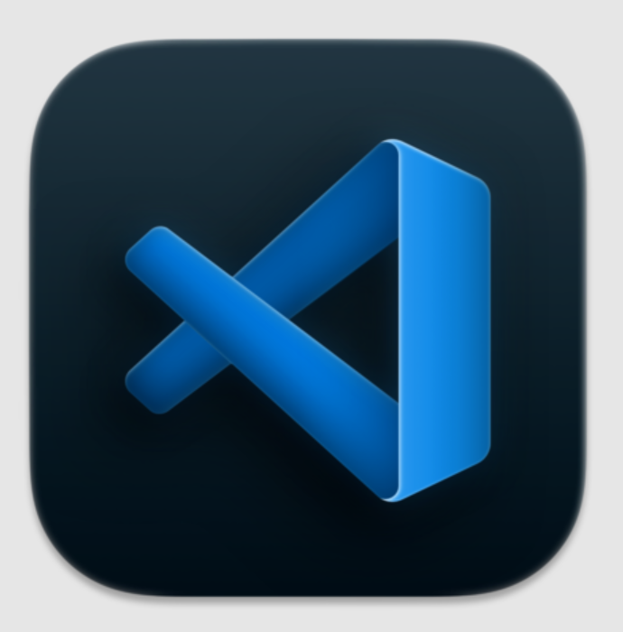
Visual Studio Code
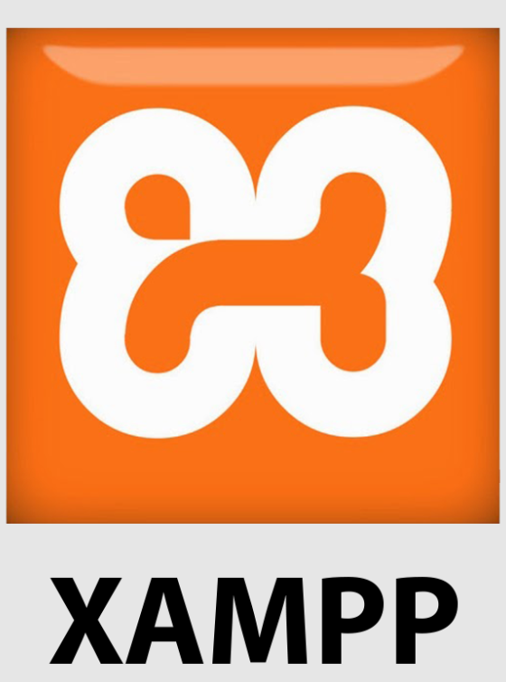
XAMPP
GitHub / Bitbucket
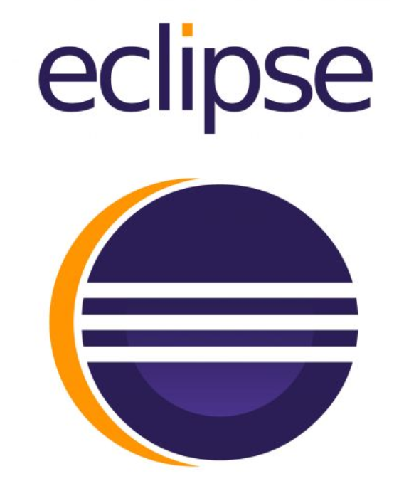
Eclipse
Anaconda
Lucidchart
Expériences Professionnelles
STAGE: Conceptrice d'Architecture Web
mars-avril 2025J'ai conçu et structuré l'architecture technique complète du site web, définissant précisément la disposition des sections, la hiérarchie des pages et l'organisation des éléments d'interface. Mon travail a permis de créer une base solide et cohérente pour l'ensemble du projet.
Développeuse Web Fullstack – Projet Cinéma
Octobre-Novembre 2025Développement complet d'un site de cinéma moderne avec interface utilisateur fluide, fonctionnalités dynamiques et gestion de données.
Veille Technologique
Applications Desktop : Évolution, Technologies et Tendances Actuelles
Ma veille porte sur l’évolution des applications desktop, un domaine essentiel pour la création de logiciels performants, stables et adaptés à une utilisation locale. Malgré la montée du web et du mobile, les applications desktop restent indispensables dans de nombreux secteurs (montage vidéo, développement logiciel, gestion de données).
CONTACT
Si vous avez une question, une demande, un projet ou juste une envie d'en savoir un peu plus sur moi, n'hésitez surtout pas.
Contactez-moi !
Localisation
91000 Évry-Courcouronnes, France